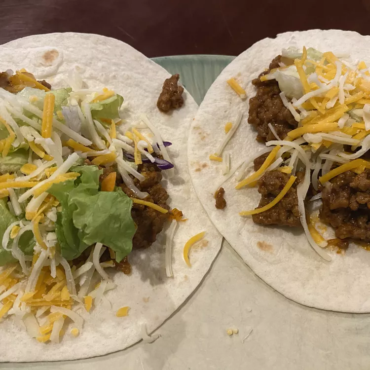

Tacos Recipe

Description:
These easy, tasty tacos get fabulous flavor from Mexican-style tomato
soup. Your family can have this crunchy and delicious dish on the table in
just 25 minutes.
Ingredients:
- 2 pounds ground beef
- Salt and ground black pepper to taste
- 1 (14.5 ounce) carton Campbell's Mexican-style tomato soup
- 12 taco shells, warmed
- 3/4 cup shredded lettuce
- 3/4 cup diced tomato
- 1/3 cup shredded chedder cheese
Steps:
-
Cook and stir beef in a 12-inch skillet over medium-high heat until well
browned and crumbly, 7 to 9 minutes. Pour off any fat. Season with salt
and pepper.
-
Stir soup into the skillet and bring to a boil. Reduce the heat to low
and cook, stirring often, until soup is reduced, about 5 minutes.
-
Divide beef mixture among taco shells. Top with lettuce, tomato, and
cheese.